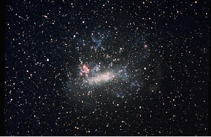

Guia Das Galáxias

Galáxia Grande Nuvem de Magalhães
Descrição
Grande Nuvem de Magalhães (comunente abreviada como LMC, do Inglês Large Margellanic Cloud) é uma galáxia anã satélite que orbita em torno da Via Láctea
Dadis Interessantes
- É rica em gases e poeira.
- Foi batizada por Fernão de magualhães.
- A Grande Nuvem de magualhães é uma das galáxias mais próximas da Via Láctea.
Outra galáxia: Andromeda, Olho Negro